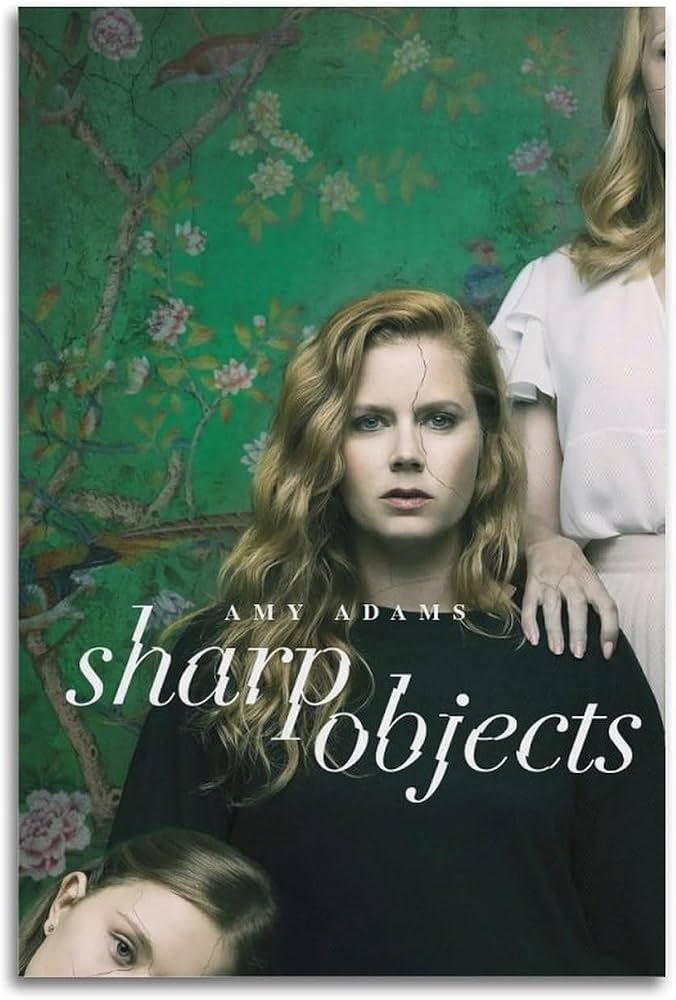
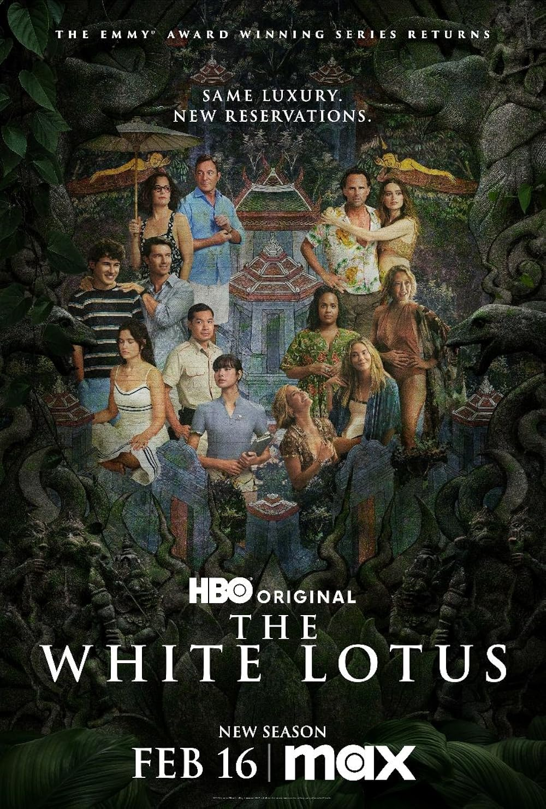
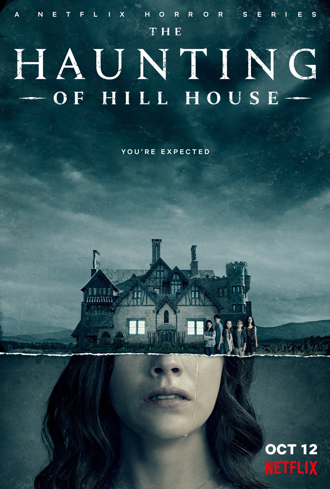
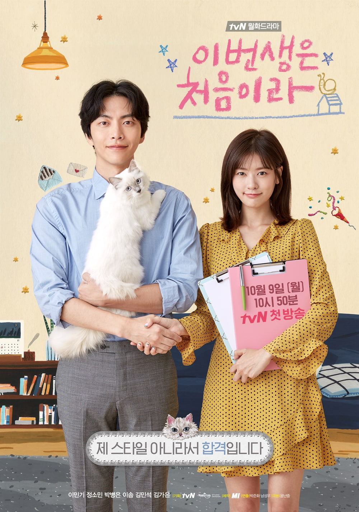
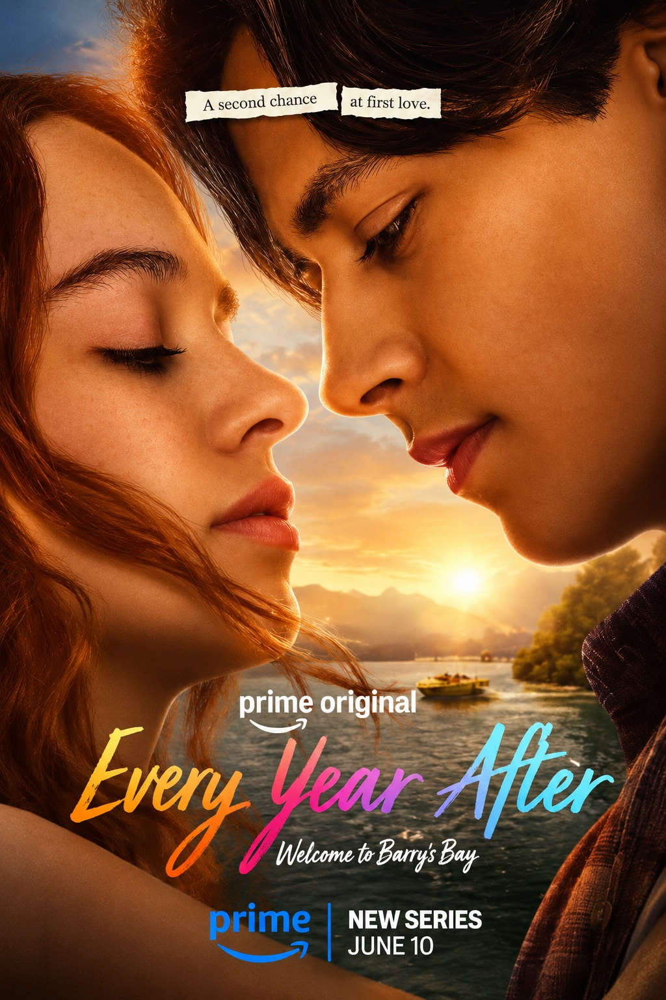

Sharp Objects
Esta nunca la he visto pero si he visto muchas recomendaciones. Es un thriller de una reportera que vuelve a su pueblo para cubrir un caso de un asesinato de dos muchachas.
La puedes ver en HBO

The White Lotus
Esta tampoco la he visto pero siempre me ha llamado la atención. Trata de la vida de los empleados y huéspedes de un resort super exclusivo durante toda una semana, es como una crítica social también.
La puedes ver en HBO
El Inocente
No sabría como describir esta serie, simplemente me voló la cabeza. Entre menos sepas de la trama mejor, está llena de sorpresas y al menos a mí me enganchó demasiado rápido. Tienes que verla, es una serie española y digamos que trata de un accidente que termina destapando un montón de situaciones del pasado de los personajes y sus consecuencias.
La puedes ver en Netflix

The Haunting of Hill House
Otra recomendación de serie que no he visto, pero te puedo asegurar que es de las series que mas me han recomendado en la vida y que confío mucho en que es buena. Es una serie de terror de una "casa embrujada" y los recuerdos de una familia con esa casa.
La puedes ver en Netflix
Mr. & Mrs. Smith
He querido verla desde hace mucho, dicen que es la mejor serie del 2024. Trata de dos espías que tienen que trabajar juntos y fingir una vida normal donde son esposos. Es un poco mas de acción y yo creo que te podría gustar bastante.
La puedes ver en Amazon Prime

Porque Esta Es Mi Primera Vida
Un dorama que tampoco he visto pero que me encantó el concepto. Trata de dos personas adultas que no tienen nada de plata y que por cuestiones de la vida terminan viviendo juntos para que entre los dos puedan aguantar con todos los gastos que tienen.
La puedes ver en Amazon Prime y Netflix

Every Year After
Es una nueva serie de Amazon Prime, y yo sé que te gustan mucho las series de ellos. La descripción es la siguiente es una historia romántica y nostálgica de primeros amores, de la gente y las decisiones que nos definen. Creo que te podría gustar la verdad.
La puedes ver en Amazon Prime